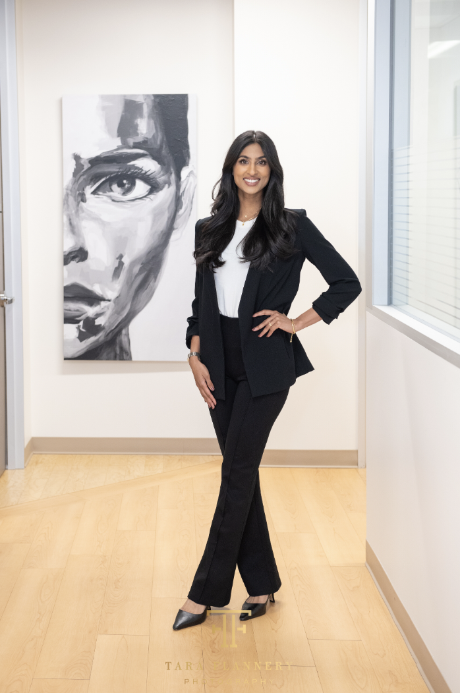
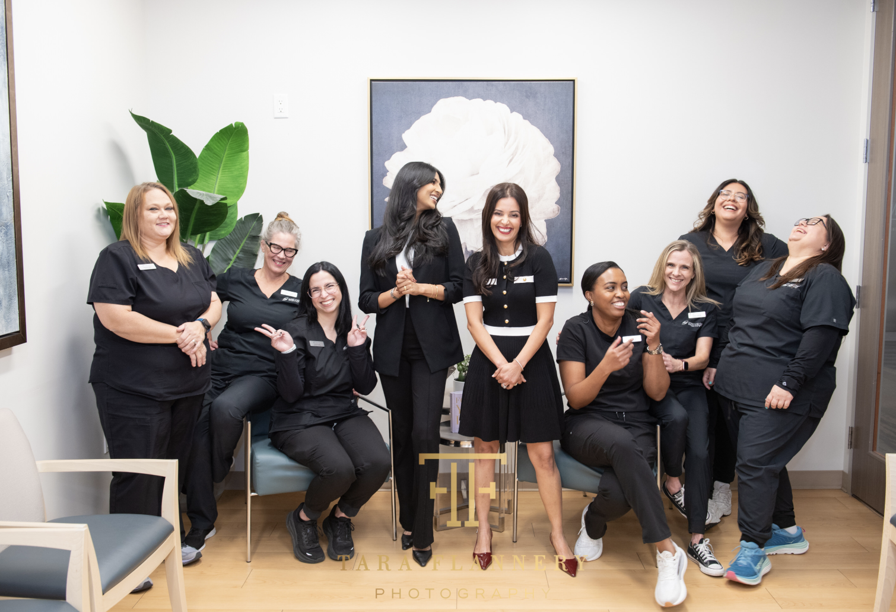

Our Practice
Soni Vision Institute was built on a simple belief: patients deserve elite surgical care delivered with genuine compassion. Meet the team behind Houston's highest-rated eye surgery practice.

Our Story
Soni Vision Institute began with a vision to create something different in Houston's ophthalmology landscape — a practice where surgical excellence and personal attention were never in conflict.
As a surgical-only practice, we don't dilute our focus with optical retail or high patient volumes. Every resource, every hour, every decision is made in service of one goal: the best possible outcome for each patient who walks through our doors.
The result speaks for itself. A 4.9-star rating across 703+ Google reviews — the highest of any eye surgery practice in Greater Houston.
Schedule a ConsultationFounder & Lead Surgeon
Dr. Ruhi Soni is the founder of Soni Vision Institute and a board-certified ophthalmologist with more than 15 years of experience in cataract and refractive surgery. A Cypress, Texas native, she studied engineering at Texas A&M University before returning to Houston for medical school and residency at Baylor College of Medicine.
Recognized as a Rising Star by Texas Monthly and honored as a Women in Medicine recipient in 2022, Dr. Soni is known for her precision, compassionate care, and commitment to each patient's unique needs. She specializes in refractive cataract surgery, advanced technology lens implantation, and eyelid restoration.
Dr. Soni speaks Punjabi, Urdu, Hindi, and English, and serves a diverse patient community across Cypress, Katy, and Greater Houston.
Texas A&M University · Baylor College of Medicine (MD & Residency)
Texas Monthly Rising Star · Women in Medicine 2022 · Board of The Lighthouse of Houston
Refractive cataract surgery, advanced technology IOLs, eyelid restoration


Surgeon & Partner
Dr. Nikitha Reddy is a board-certified ophthalmologist whose training spans some of the most prestigious institutions in North America. She graduated with honors from The University of Texas at Austin, earned her medical degree at UT Southwestern Medical Center, and completed her ophthalmology residency at UT Southwestern — one of the nation's largest surgical training programs.
Dr. Reddy then completed a highly competitive fellowship in Glaucoma and Advanced Anterior Segment Surgery (GAASS) at the University of Toronto under world-renowned surgeon Dr. Ike Ahmed. She specializes in refractive cataract surgery, complex cataract cases, advanced technology IOLs, minimally invasive glaucoma surgery (MIGS), and refractive procedures including LASIK and EVO ICL.
Recognized as a Best in Texas – Top Doctor in 2024, Dr. Reddy serves on the medical advisory boards of Glaukos, Sight Sciences, ViaLase, and LENSAR — industry recognition of her expertise at the leading edge of anterior segment surgery. She speaks Hindi, Telugu, and English.
UT Austin (Honors) · UT Southwestern (MD & Residency) · University of Toronto — GAASS Fellowship, Dr. Ike Ahmed
Best in Texas – Top Doctors 2024 · Medical Advisory Boards: Glaukos · Sight Sciences · ViaLase · LENSAR · Board Certified, American Board of Ophthalmology
AAO · American Glaucoma Society · AECOS · AMA · Texas Medical Association
Complex cataract surgery, MIGS, advanced technology IOLs, LASIK, EVO ICL
In the Clinic
From your first consultation to your last follow-up, you will work directly with your surgeon — not a resident, not a rotating provider. We see fewer patients so we can give each one more.
Our clinic was designed to feel calm, unhurried, and welcoming. Because we believe the patient experience matters just as much as the surgical outcome.
Every patient receives a treatment plan built around their specific vision goals, lifestyle, and anatomy.
Consistency builds trust. You will see the same doctor from consultation through post-operative care.
We use the latest imaging and biometry equipment to ensure precise measurements and optimal outcomes.

Our Team
Behind every successful surgery is a team of dedicated professionals who care as much about your experience as the surgeons do. From the moment you call to your last follow-up visit, our staff is here to make the process as smooth and reassuring as possible.
We've built a culture where patients are treated like family — because that's the only standard we're willing to accept.
Meet Us in Person →
Schedule your consultation with Houston's highest-rated eye surgery team. Most patients are seen within one week.